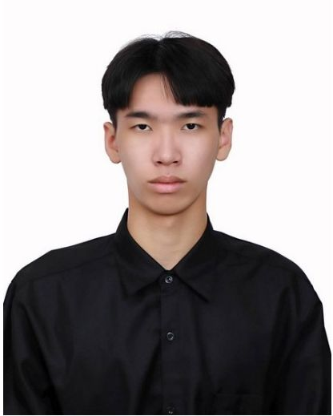
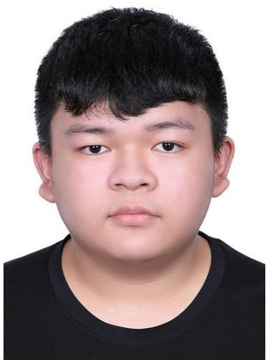
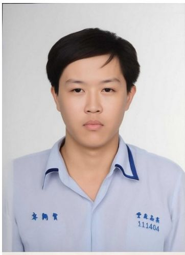
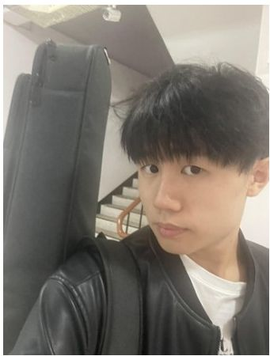

面對人才斷層、預算受限與設備老舊的三重挑戰，本研究以低代碼 / 無代碼 AI 平台與「發現驅動型規劃 (DDP)」策略為核心， 驗證中小企業如何以「微型轉型」走出一條低成本、高效益的數位升級路徑。
隨著 AI 技術爆發式成長，智慧製造已成為全球轉型核心，但台灣傳產與中小企業 (SMEs) 普遍面臨「資源貧乏」的困境。 本研究以混合研究法，結合對比實驗、個案研究與量化統計，驗證低代碼 AI 平台搭配 DDP 策略， 能否成為傳產跨越技術鴻溝的可行解方。
四位來自國立屏東科技大學企業管理學系的成員，結合管理、數據分析、行銷與資訊應用背景共同投入研究。

謝佳和
企業管理系一年級 B 班
大家好，我叫謝佳和，目前就讀企業管理系。個性認真負責、做事積極主動，遇到問題時喜歡透過思考與分析找出解決方法。 學習過程中除了努力充實專業知識外，也積極考取相關證照，目前已取得商用分析師、網頁設計丙級技術士以及軟體應用丙級技術士證照， 希望藉此提升專業能力與競爭力。我對商業管理與企業經營領域特別有興趣，喜歡研究市場趨勢、商業模式以及企業運作方式， 也希望未來能將數據分析與管理知識結合，協助企業做出更有效率的決策。我認為現代商業環境與資訊科技密不可分， 因此也持續學習資訊相關技能，培養跨領域能力。未來期許自己能成為兼具管理素養與資訊能力的人才，為職涯發展奠定良好基礎。

李暐鵬
企業管理系一年級 B 班
目前就讀於企業管理學系，在學期間除了學習管理、行銷、財務等專業知識外，也積極培養數據分析與資訊技術能力， 希望成為兼具商業思維與數位能力的跨領域人才。已取得商用數據分析師證照，具備資料整理、分析及視覺化呈現能力， 能透過數據發掘問題並提供決策參考。為提升資訊應用能力，也考取電腦軟體應用乙級及網頁設計丙級證照， 具備基礎程式邏輯、網頁建置及資訊工具運用能力。學習過程中不僅重視專業技能的培養， 也透過課堂專題與團隊合作訓練溝通協調能力，學習如何整合不同意見並共同完成目標。 期望運用企管背景所建立的整體視野，結合數據分析與資訊技能，協助團隊提升工作效率與決策品質，為企業創造更多價值。

卓翔賀
企業管理系一年級 B 班
我叫卓翔賀，現就讀於企業管理系。個性隨和但盡責，不會的事情給個大致方向就會嘗試解決處理， 就算沒有方向也會盡自己所能尋找出路，讓成品在期限前繳交。在課業上我會努力吸收專業知識並考取相關證照， 讓未來找工作時可以多一份底氣與一項專業，完善並充實自我履歷；目前已取得數據分析師證照， 學會初步看相關數據模型的結果，並運用於日常作業協助。目前感興趣的方向是行銷領域， 希望能學到未來進入公司可運用的技術與技巧，也希望把這堂課中學到的東西與行銷結合。 針對目前的目標持續努力學習相關知識，積極參與各種課堂活動與實例討論充實自我，期許未來能成為靈活運用工具的行銷人才。

蔡宇晉
企業管理系一年級 B 班
大家好，我是就讀國立屏東科技大學企業管理系的蔡宇晉。高中時期曾代表學校參加全國高中職技藝競賽商業類商業簡報項目， 訓練過程學習如何在短時間內解讀一份資料，並重整為大家可以快速理解的簡報與重點， 讓冗長的訊息能夠更快速吸收，也因此打下行銷與資料整合的能力。證照方面考取了電腦軟體乙級、丙級、門市服務丙級、 商業數據能力分析等；跨領域方面則取得商用數據分析師、溫室氣體盤查師以及產品碳足跡規劃師等相關證照， 這些經歷讓我從實務與理論兩端都建立基本概念。未來將著重於行銷與管理部分的精進培養， 將自身訓練成更成熟的企業人才，帶著更專業的知識和技能，為更多企業創造價值與可能性。
本研究綜整實證數據與個案訪談，歸納出以下五項關鍵發現。
傳統手動部署平均需 125.1 分鐘、約 65 條指令；AI No-Code 平台縮短至 26.4 分鐘、不到 20 個決策點，成功率接近 100%。
無 AI 背景員工以無代碼工具訓練的齒輪瑕疵檢測模型準確率達 90%、F1 分數 0.9388，優於人工目檢 (80%) 與傳統 AOI (70%)。
S 公司導入 AI 協作後省去 100% 外包費用、總成本降低 50%，月產內容篇數從 4 篇提升至 6 篇，內部工時僅微幅下降。
魚苗計數 AI 模型達 95% 等效準確率，作業效率提升超過 2 倍，直接緩解傳統養殖業的勞動力斷層問題。
多代理框架將 AI 公平性從 40.4% 提升至 71.6%；但真正關鍵仍是 HR 從行政轉為「變革推動者」，搭配領導者決心與 DDP 漸進策略。